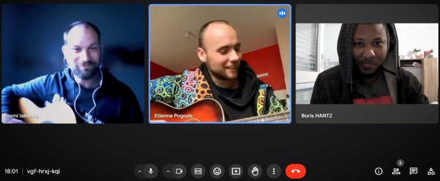

GrooveGather
présenté parGénèse du projet
Lors d'une réunion (à trois !)
où nous devions définir le projet
L'idée s'est imposée à nous :) !
Nous avons décidé de réaliser :
Un site de collaboration sur des projets musicaux
qui permet de partager :
- des pistes musicales
- des partitions
- des paroles
- des compétences musicales
Framework et Librairies Front-end

AOS-Animate on scroll using CSS3
ngx-pagination
ngx-toastr
Back-end :
Intégration continue :
GitHubActions
Docker
Portainer
Autres outils utilisés
Jira (gestion de projet)
Mocodo (création de MCD - MLD)
Excalidraw (bloc-note partagé et wireframe)
Mockaroo (génération de datas)
ThunderClient (Postman alternative)
Chat GPT
Exemple d'utilisation
création d'un projet musical